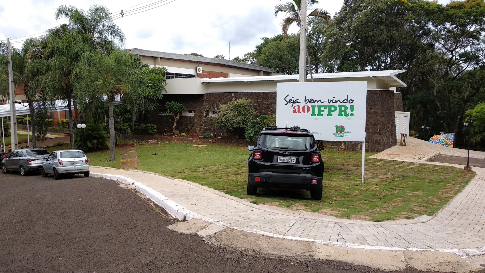

Meus Lugares Favoritos de Foz do Iguaçu
Como me mudei para Cascavel exatamente no momento em que começou a quarentena, não conheço a cidade o suficiente para fazer esse site sobre ela. Então farei sobre minha cidade natal, Foz do Iguaçu. Peço perdão pela maioria dos lugares serem da minha rotina, é que eu não era muito de sair kkkkkkk.
As Cataratas do Iguaçu

Não tem como falar de Foz do Iguaçu sem falar das Cataratas, afinal, ela não é considerada uma das 7 maravilhas naturais do mundo à toa. É um lugar ambíguo, pois ao mesmo tempo que nós cansamos de andar lá pelo tanto de coisa que tem para ver, ela renova nossas energias de uma maneira inexplicavel. É deslumbrante aos olhos e ao coração, pois nos faz perceber explicitamente o poder da natureza, nos levando a sentir respeito e humildade. Pessoas viajam do outro lado do mundo para vê-la, o que já nos comprova de que é uma visita que com certeza vale a pena.
Caso queira comprar um ingresso para visitá-la, pode encontrá-lo no site oficial das Cataratas do Iguaçu.
IFPR - Campuz Foz do Iguaçu
Antes de se tornar um Campus do IFPR, o lugar era um clube, então é repleto de área verde e é ENORME. Eu emagreci 2 quilos depois de começar a estudar lá só de ir e voltar da entrada até a minha sala todos os dias. Uma das minhas memórias mais felizes é correr pelo campus explorando-o com os meus amigos. A coordenação fez de tudo para ser um ambiente confortavel: possui bancos e almofadas em vários lugares; tem um cantinho com instrumentos, como violão e teclado, para os alunos estravasarem. Possui diversas quadras que, mesmo que não usemos para jogar, são cercadas de verde e sombra para descansarmos e curtimos um tempo com nossos amigos nos intervalos. E o meu favorito: uma cantina cujo café com leite é uma delícia, perfeito para acompanhar o extresse de fazer trabalho no ultimo dia do prazo.
Mas além das vantagens de se estudar aqui, ele possui diversos eventos culturais, como apresentações de peças de teatro, aulas de yoga, competições de robótica e muito mais. Caso tenha interesse, pode acessar o site IFPR - Campus Foz do Iguaçu para mais informações.
Templo Budista Chen Tien

É o que o nome diz: um templo budista. É um lugar enorme, com diversas estátuas de figuras importantes do budismo, aréa verde, vista da cidade por cima. É um ótimo lugar para conhecer a importante cultura do budismo e para procurar um pouco de paz, inspiração, silêncio e ar puro, ou apenas um tempo em família.
Caso queira saber mais sobre o Templo, pode encontrar nesse site turístico.
Outros lugares interessantes de se visitar:
- DreamLand
- Usina Hidrelétrica de Itaipu
- Marco das Três Fronteiras
- Itaipu Ecomuseu
- Itaipu Refúgio Biológico
- Parque das Aves
Autora
Sarah Klock Mauricio, aluna do terceiro ano do curso Técnico em Informática Integrado ao Ensino Médio do IFPR. Começou o curso em Foz do Iguaçu, mas se transferiu ao Campus de Cascavel em 2020.